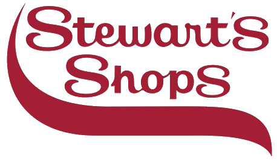

4th Family>
4th Family Incorporated is a not-for-profit organization that hosts teen/community events, mentor programs, personal development programs, educational programming, wellness & health programs, annual sport leagues & tournaments, as well as educational trips. We engage all communities within the Capital District, starting in the high schools. Our goals are to motivate, encourage and uplift the community. 4th Family empowers the community by targeting at risk youth and adults and providing them with an array of unique personal development opportunities.
S.T.E.M Programs
Court Science
Gridiron Sports
G.O.A.L.S
Events
Photos


Videos

John Scott is one of the Co-founders of 4th Family Inc. He presently works as a school administrator at a local middle school in addition to being the Official Trainer for the City Rocks AAU program.

Jahkeen Hoke is one of the Co-founders of 4th Family Inc. After graduating from Morehouse College in 2011, he returned to his home town of Albany to make a difference in the community where he came from.

John Drazan is the STEM Director for 4th Family. He currently a graduate student in Biomedical engineering at the Rensselaer Polytechnic Institute in Troy. John is also a fellow in the NSF Triple 3Helix program where he uses his research.

Analusette Shaello (Ana) moved to our community in 2012. She is the Community School Facilitator for Troy Elementary School #2. Her role keeps her busy in the community engaging with families, neighbors, business owners, and City of Troy leadership.

Laquana Cooke is the Media Literacy and Education Director for 4th Family. She is a PhD Candidate in Communication and Rhetoric at Rensselaer Polytechnic Institute.

In RPI’s Community Situated Research project, graduate fellows will examine the potential relations between their STEM research, and the social issues facing local low-income and minority communities (health, environment, poverty, crime, information access, etc.). These same local communities will also be the location for the fellows middle school collaborative teaching program. Thus graduate fellows will gain a greater awareness of the connections between their research disciplines and pressing social issues, as well as the training that enables them to communicate these connections to the public. On the GK-12 side, studies show that many minority students are disinterested in STEM academics because they do not see its relevance to their particular lives. By working with graduate fellows trained as ‘civic scientists’, (along with content from our international program) GK-12 teachers will gain new opportunities to engage those disenfranchised students. It is critical that graduate teaching fellows and their faculty mentors are empowered to select projects situated at the frontiers of STEM research, and not merely applications of established knowledge. Science and Technology Studies graduate students and community mentors will be researching the social and environmental issues in these communities to help find the intersections with STEM research. A studio class will create new educational technologies that translate the grad fellows’ STEM research into learning labs for the middle school students. Rather than a one-way trickle-down of knowledge, we will explore the possibilities for a ‘triple helix’ collaboration between university, GK-12, and community knowledge production.
